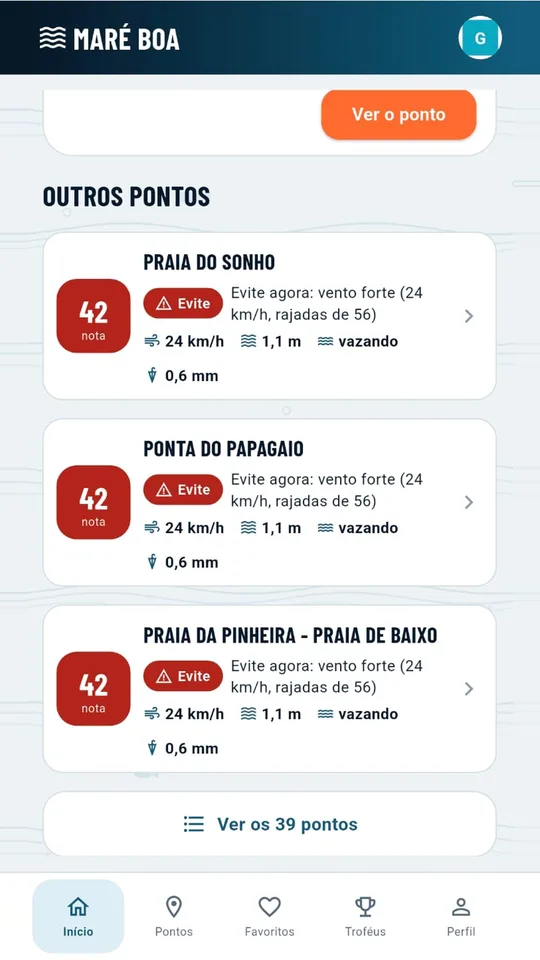
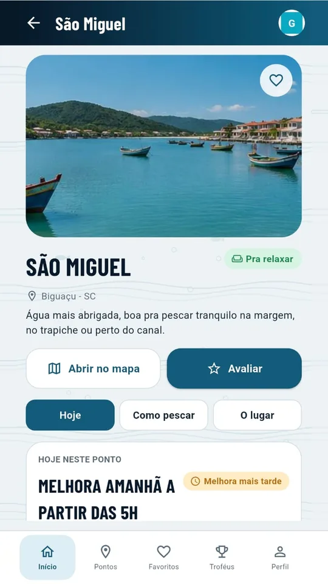
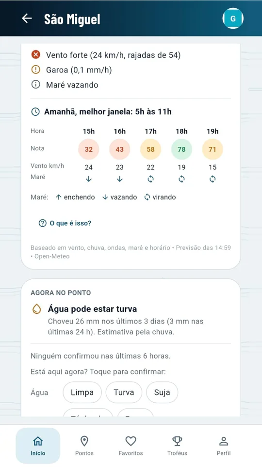

O que o app faz
Tudo o que você olha antes de sair para pescar, num lugar só.
Maré
Maré alta e baixa ao longo do dia, para cada ponto.
Vento e chuva
Vento, rajadas, chuva e pressão, hora a hora.
Fase da lua
Lua do dia e horário do nascer e do pôr do sol.
Previsão de pesca
Mostra a hora boa e a hora de evitar, juntando tudo isso.
Pontos de pesca
Praias, costões e rios por região: Palhoça e Pinheira, Sul da Ilha, Leste e Lagoa e mais. Abre direto no Google Maps.
Agora no ponto
Veja se a água deve estar limpa, turva ou suja, e confirme para a turma como está.
Sala de Troféus
Registre suas capturas com foto e guarde seus pontos favoritos.
Veja como é




Arraste para o lado para ver mais telas →
Quero testar
O Maré Boa está em teste no Android antes de chegar para todo mundo na Google Play. Para entrar no teste:
- Mande o seu GmailO e-mail que você usa na Play Store do celular. É só para liberar o seu acesso.
- Aceite o conviteAbra o link de teste no celular, entrando com esse mesmo Gmail, e toque em “Participar do teste”.
- Instale pela Play StoreDepois de aceitar, toque em “Baixar na Google Play” e instale como qualquer outro app.
Também dá para mandar o Gmail pelo WhatsApp do grupo. Por enquanto o app é só para Android.
É seguro?
É. Pode instalar tranquilo.
Quem fez
O Maré Boa é um projeto de uma estudante da PUC, feito em Floripa para a turma da pesca. Feito por quem pesca, para quem pesca. Tem sugestão de ponto ou achou algum erro? Escreva para mareboa.app@gmail.com.